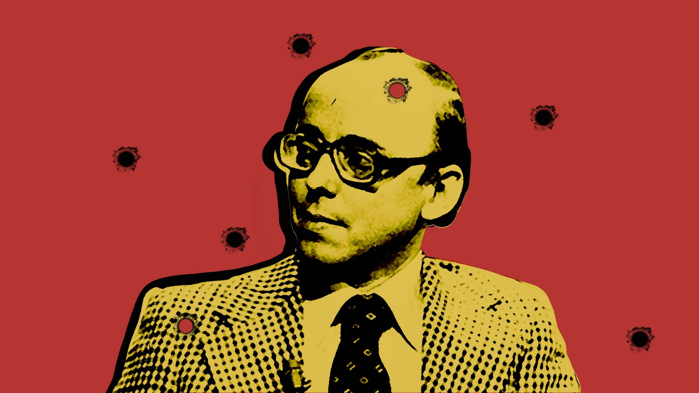
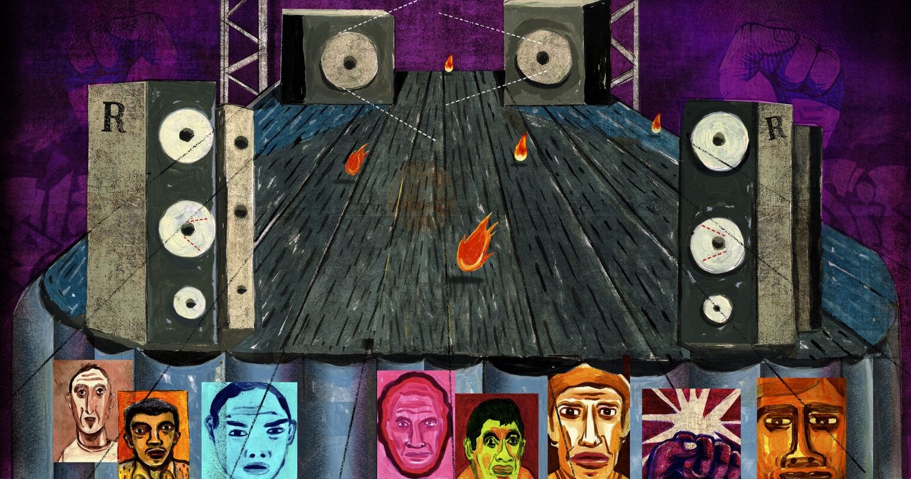
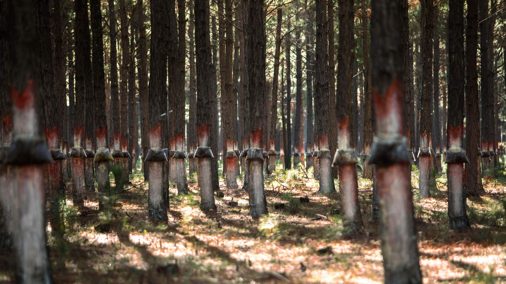
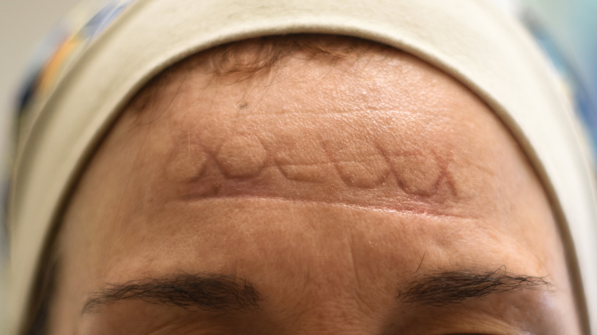
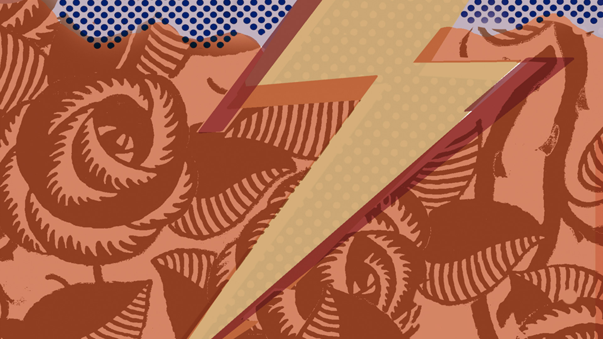
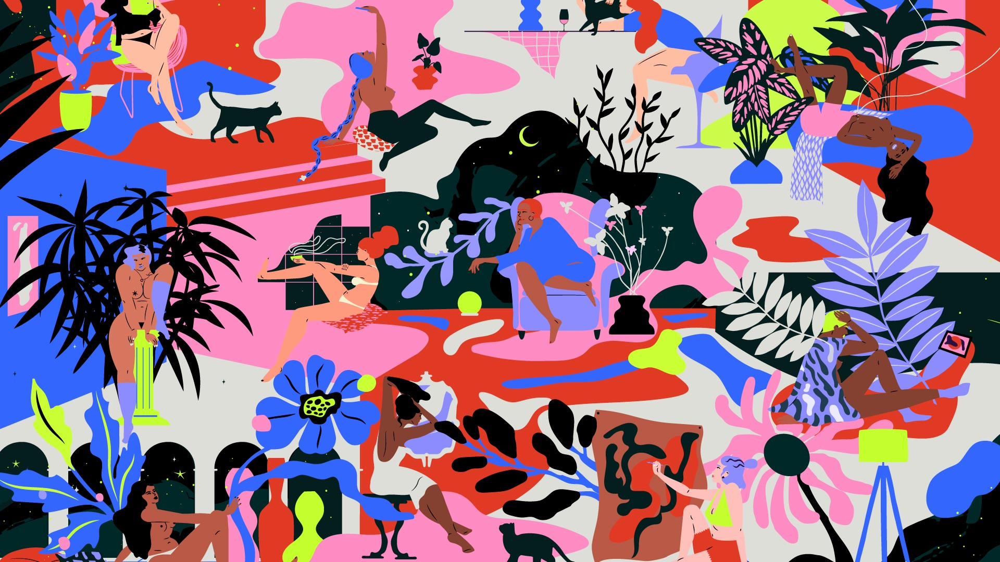
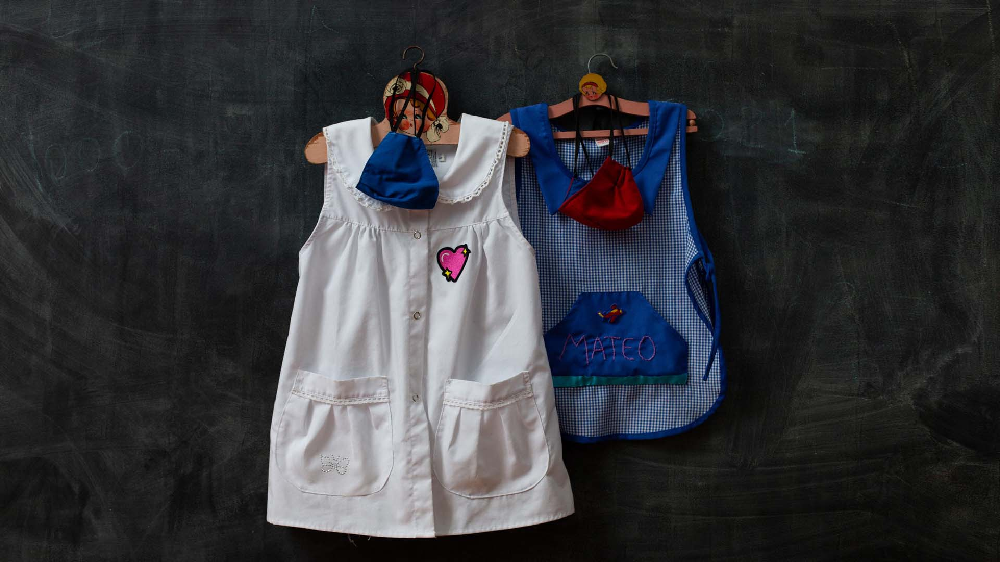
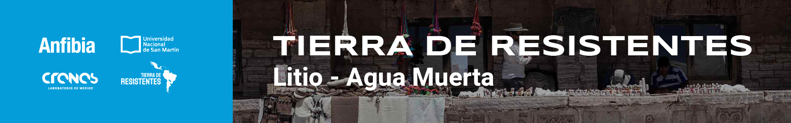

Crónicas
Ensayos
Podcast
Talleres
Periodismo Performático
Tienda
Qué es Anfibia
Ciper/Anfibia
CHILE: ¿UNA NACIÓN O VARIAS NACIONES EN UN ESTADO?
Por
Claudio Fuentes S.
Catamarca volvió a habilitar la minería
ANDALGALÁ: NO CONFIAMOS NI EN EL AGUA DE LLUVIA
|
Foto
Magalí Druscovich
Los legados del menemismo
LA ANTIPOLÍTICA, UN FANTASMA QUE RECORRE ARGENTINA
|
Por
Nicolás Freibrun
|
Ilustración
Juan Dellacha
CRÓNICAS
El ultimo fin de semana antes de la segunda ola
QUISIERA NO DECIR ADIÓS
|
Por
Julián Gorodischer
|
Foto
Martín Kraut

Chile: la lucha armada en la transición democrática
MUERTE AL CREADOR DE LA CONSTITUCIÓN DE PINOCHET
|
Por
Juan Cristóbal Peña

Periodismo Situado
COLOMBIA: A LOS DISPAROS SE RESPONDE CON ACTIVISMO Y MÚSICA
|
Por
Tania Tapia Jaúregui
|
Ilustración
Juan Soto

Los extremos del río Paraná
LOOR AL HUMEDAL LITORAL
|
Por
Lila Seigrist
|
Foto
Sofía López Mañán

A un año del ASPO: diario de un infectólogo
LA CURVA NO ES UNA INFOGRAFÍA, ES UNA CICATRIZ
|
Por
Celeste del Bianco
y
José María Malvido
|
Foto
Ariel Timy Torres

La búsqueda de la igualdad sexual
ORGASMO: UN GRITO HERMOSO, DIVINO Y AGUDO

Programa de formación y reflexión
FEMINISMO FUTURO
|
Ilustración
Vero Escalante

Volver a las escuelas
LA DELICADA TAREA DE VIVIR EN UNA BURBUJA
|
Por
Tali Goldman
|
Foto
Victoria Gesualdi
Alberto Fernández en México
EN BUSCA DE UN EJE PROGRESISTA
Por
Emiliano Ruiz Parra
